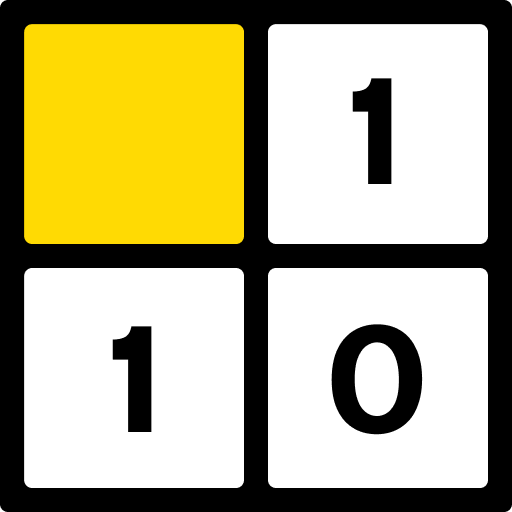

Takuzu
A binary logic puzzle. Fill the grid with 0s and 1s until every row and column follows the rules.
How to play
- Fill every empty cell with a 0 or a 1.
- No more than two of the same number can sit next to each other in a row or column.
- Every row and column has as many 0s as 1s.
- No two rows are the same, and no two columns are the same.